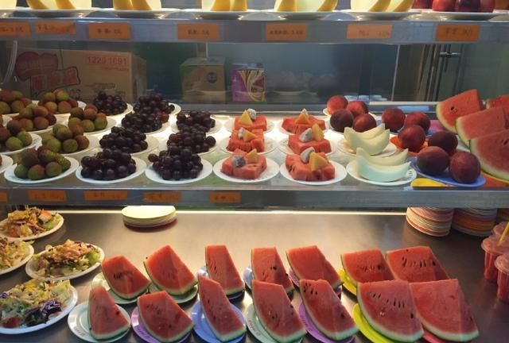
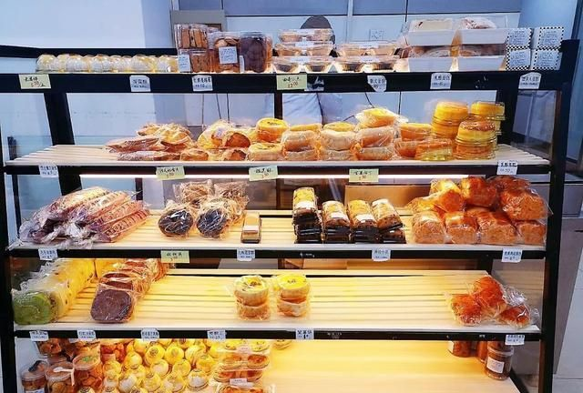
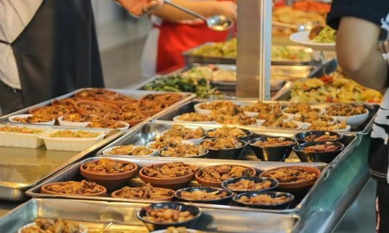
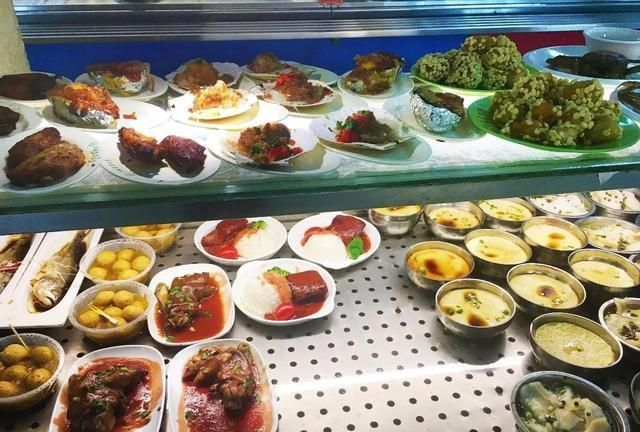
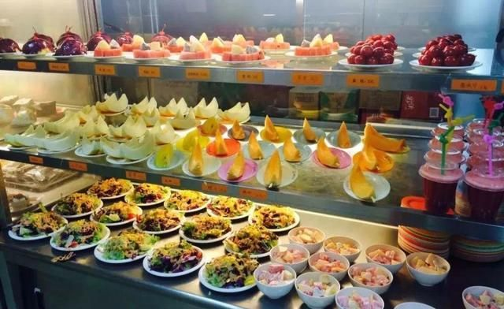
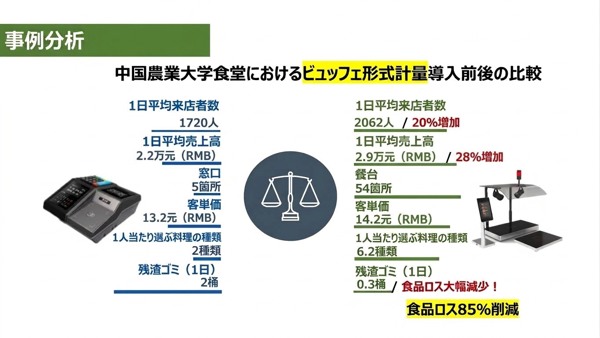
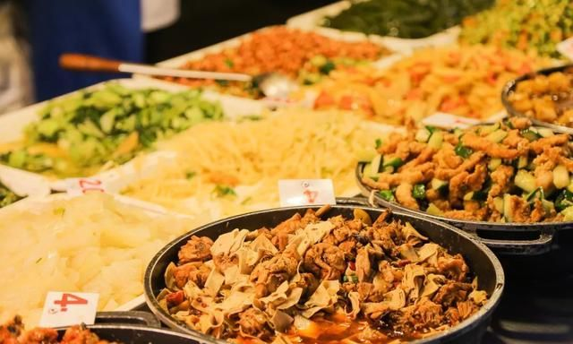

この記事でわかること
- 食堂の本来の目的と、運営側が重視する「栄養」「健康」「価格」というキーワード
- 多くの食堂が「料理の種類を増やせない」本当の理由（行列と精算）
- 中国・北京農業大学の食堂から得たヒントと「計量精算」の仕組み
- 料理の種類が平均2種類→ 6.2種類へ、食べ残しが85％減少というデータ
- これからのスマート食堂に必要な発想と、利用者に愛されるための条件
学生食堂や社員食堂は、温かい食事を手頃な価格で提供してくれる、ありがたい存在です。
では、食堂の本来の目的は何でしょうか？
食堂は何のためにあるのか？
学生食堂の目的は、学生や教職員に栄養バランスの取れた食事を手頃な価格で提供することです。また、学生同士が交流できるコミュニティの場としての役割もあります。
社員食堂も同様です。従業員に健康的な食事を提供し、健康管理や仕事の効率向上、福利厚生の充実につなげることが重要です。
つまり、食堂を運営する側にとって、重要なキーワードは「栄養」「健康」「価格」だと言えるでしょう。
しかし、それだけで利用者に愛される食堂になるのでしょうか？
なぜ食堂は不人気になるのか？
学生や従業員の声を聞くと、食堂に対する不満も少なくありません。
私自身、学生時代の食堂を思い出すと、食事の内容に満足できなかった記憶があります。
その後、大手企業に勤めるようになり、社員食堂を利用しました。学生食堂よりも充実していましたが、料理の種類はそれほど多くありませんでした。
当時の食堂にも、さまざまな事情があったと思います。
では、なぜ多くの食堂では、料理の種類を増やすことが難しいのでしょうか？
その理由の一つが、昼食時間の行列です。
行列を減らすために、料理の種類を減らす？
社員食堂では、勤務シフトによって利用時間を分散できる場合があります。
一方、大学では、多くの学生が同じ時間帯に昼食を取ります。限られた昼休みの間に、大勢の学生へ食事を提供しなければなりません。
そのため、レジ前の行列を解消することは、大学食堂にとって非常に重要な課題です。
従来の食堂では、レジ担当者が料理を確認し、価格を入力して会計する方式が一般的でした。
スーパーマーケットの商品とは違い、料理にはバーコードが付いていないことが多いため、一品ずつ確認する必要があります。
料理の種類が増えるほど、会計処理が複雑になる可能性があります。
その結果、行列を減らすために、料理の種類を絞るという考え方が生まれます。
しかし、料理の種類が少なければ、利用者が選べるメニューも限られてしまいます。
行列を減らすために料理の種類を減らす。それは、本当に最善の方法なのでしょうか？
中国の大学食堂で見つけたヒント
私はこの疑問が気になり、中国でも大学食堂について聞き込みをしました。
中国には「民以食為天」という言葉があります。
人々にとって、食べることは何よりも大切である、という意味です。
中国の大企業や政府機関には、福利厚生が充実し、豊富な料理を提供する食堂もあります。しかし、そうした環境を実現するには、相応の予算が必要です。
そこで、私は大学食堂に注目しました。
複数の大学食堂の利用者に話を聞く中で、特に評判の高い食堂があることを知りました。
それが、北京農業大学の食堂です。


この食堂の興味深い点は、料理の種類を豊富にするだけでなく、会計の効率化にも取り組んでいることです。
好きな料理を、好きな量だけ
この食堂の取り組みで注目したいのは、学生が自分で好きな料理を選び、好きな量だけ取れる仕組みです。
決められた定食を選ぶのではなく、さまざまな料理の中から、自分が食べたいものを自由に組み合わせることができます。


しかし、料理の種類が増えれば、従来のレジ方式では会計に時間がかかってしまいます。
そこで重要になるのが、料理の重量に基づいて料金を自動計算する「計量精算」という方法です。
料理を取る際に重量を計測し、グラム単位で料金を計算することで、一品ずつ料理を識別して価格を入力する手間を減らします。
つまり、料理の種類を増やしても、従来のレジ方式に頼らずに精算できる仕組みです。
この方式には、利用者にとっても大きなメリットがあります。
- 好きな料理を自由に選べる
- 食べたい量だけ取れる
- 自分の食欲や予算に合わせて調整できる
- 料理を選ぶ楽しみが増える
食堂は、単にお腹を満たす場所ではありません。
自分の好みに合わせて食事を選ぶ楽しさも、大切な価値なのです。
料理の種類は2種類から6.2種類へ。食べ残しも85％減少
この取り組みについて、紹介されているデータには、興味深い数字があります。
学生が一回の食事で選ぶ料理の種類は、平均2種類から6.2種類へ増加したとされています。
さらに、食べ残しも85％減少したとされています。
好きな料理を好きな量だけ選べる仕組みが、食事の選択肢を広げ、食品ロスの削減にもつながったことを示す事例です。


もちろん、実際の効果は食堂の運営方法やメニュー構成などによって異なります。
それでも、この事例は、食堂の課題を解決するうえで重要なヒントを与えてくれます。
料理の種類を減らさなくても、精算方法を工夫することで、利用者の満足度と食堂の運営効率を両立できる可能性があるのです。
これからの食堂に必要なのは、スマート化
ここまで考えてきたように、利用者に愛される食堂には、さまざまな要素が必要です。
- おいしい料理
- 栄養バランスの取れた食事
- 手頃な価格
- 豊富な選択肢
- 短い待ち時間
特に、利用者が集中する大学食堂や社員食堂では、「好きな料理を選べること」と「長時間待たずに食べられること」の両立が重要です。
そのためには、料理の提供方法だけでなく、注文・計量・会計・決済まで含めた食堂全体の仕組みを見直す必要があります。
例えば、計量精算システムでは、電子秤で料理の重量を計測し、料金を自動計算できます。利用者は食べたい料理を好きな量だけ選び、食べた分だけ支払うことができます。
レジ業務の省力化だけでなく、食品ロスの削減や、利用者の満足度向上も期待できます。

出雲創安では、こうした課題を解決するために、AI画像認識・RFID・計量精算という3つのスマート精算方式を提案しています。
なかでも計量精算は、料理を自由に選ぶビュッフェ式やセルフサービス式の食堂に適したソリューションです。
詳しくは、こちらをご覧ください。
計量精算ソリューション：
https://izumosoan.com/ja/smart-cafeteria-weight.html
どんな食堂が一番人気なのでしょうか？
最後に、最初の質問に戻りましょう。
一番人気なのは、安い食堂でしょうか。それとも、健康的な食事を提供する食堂でしょうか。
私は、それだけではないと思います。
利用者にとって魅力的なのは、好きな料理を、好きな量だけ、手頃な価格で、長時間待たずに食べられる食堂ではないでしょうか。
食堂の経営側が考える「栄養」「健康」「価格」に加えて、利用者が求める「おいしさ」「選択肢」「待ち時間」にも目を向ける必要があります。
「料理を減らして行列を減らす」のではなく、「技術を活用して、料理の種類を増やしながら行列を減らす」。
これからのスマート食堂には、そのような発想が求められているのではないでしょうか。
食堂は、単に食事を提供する場所ではありません。
「今日は何を食べよう？」と選ぶ楽しさ、「おいしかった」という満足感、そして「待たずに食べられた」という快適さ。
そのすべてがそろってこそ、本当に利用者に愛される食堂になるのだと思います。
計量精算ソリューションのご相談
「好きな料理を、好きな量だけ」を実現し、行列とフードロスを同時に減らす。
ビュッフェ・カフェテリア形式の食堂に最適な計量精算を、ぜひご検討ください。